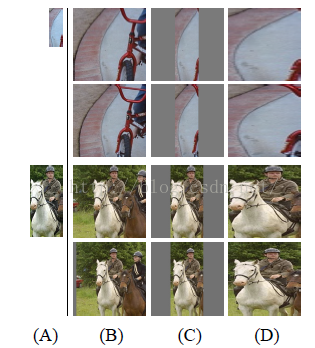
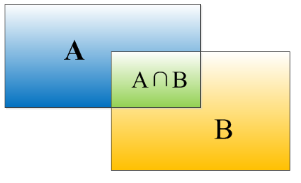

RCNN原理及mxnet实现
概述
RCNN (论文：Rich feature hierarchies for accurate object detection and semantic segmentation) 是将CNN方法引入目标检测领域， 大大提高了目标检测效果，可以说改变了目标检测领域的主要研究思路， 紧随其后的一系列模型不断刷新了目标检测领域的记录：Fast R-CNN、Faster R-CNN、SPP-Net、YOLO（v1～v3）、SSD。
RCNN算法大致分为4个步骤：候选区域生成、特征提取、类别判断、位置精修。但是，除此之外，RCNN算法还用到了一些tricks，后文作者将详细介绍RCNN的原理。
候选区域生成
针对任何一张图片，RCNN需要生成大约2000个候选区域。生成候选区域的过程使用的是Selective Search算法，该算法的大致原理是：
- 使用一种过分割手段，将图像分割成大量的小区域；
- 查看现有小区域，按照一定的合并规则合并可能性最高的两个区域。
具体原理可以阅读Selective Search for Object Recognition，这片博文介绍地较为详细。
作者实现RCNN的过程中，使用的是AlpacaDB复现的selectivesearch。此外，作者还同时使用了opencv中的createSelectiveSearchSegmentation函数，使用该函数需要安装opencv_contrib，python版本的可以通过pip安装。
1 | pip3 install opencv-contrib-python |
Selective Search算法对于非正方形的图像生成的候选框可能会超出边界，因此需要对候选区域进行一步筛选。
特征提取
RCNN算法的网络结构基本借鉴了Hinton 2012年在Image Net上的分类网络——AlexNet。

预处理
使用AlexNet网络提取特征之前，首先需要将候选区域归一化成同一尺寸$227 \times 227$，归一化的过程有不同的方法。
参考于《RCNN- 将CNN引入目标检测的开山之作》晓雷，详细过程请阅读原文。
(1)各向异性缩放
这种方法很简单，就是不管图片的长宽比例，管它是否扭曲，进行缩放就是了，全部缩放到CNN输入的大小227*227，如下图(D)所示；

(2)各向同性缩放
因为图片扭曲后，估计会对后续CNN的训练精度有影响，于是作者也测试了“各向同性缩放”方案。有两种办法
A、先扩充后裁剪： 直接在原始图片中，把bounding box的边界进行扩展延伸成正方形，然后再进行裁剪；如果已经延伸到了原始图片的外边界，那么就用bounding box中的颜色均值填充；如上图(B)所示;
B、先裁剪后扩充：先把bounding box图片裁剪出来，然后用固定的背景颜色填充成正方形图片(背景颜色也是采用bounding box的像素颜色均值),如上图(C)所示;
对于上面的异性、同性缩放，文献还有个padding处理，上面的示意图中第1、3行就是结合了padding=0,第2、4行结果图采用padding=16的结果。经过最后的试验，作者发现采用各向异性缩放、padding=16的精度最高。
预训练
作者将训练时的学习率设置为0.003，使用ILSVRC数据库进行预训练。网络需要预训练的原因是PASCAL-VOC2012数据集的训练数据不足，标记的类别也过少。预训练阶段也可以称为迁移学习，通过在ILSVRC数据集上预先训练网络。然后，针对PASCAL数据集的目标检测问题，更换预训练后的网络的最后一层，其他层的参数保持不变。最后，使用PASCAL数据集对网络进行微调。
Fine-tune
同样使用上面的网络，将最后一层换成$4096 \to 21$的全连接网络。finetune过程的学习率设置为0.001，每一个batch包含32个正样本（属于20类）和96个负样本（背景）。
产生正负样本的过程，需要考察一个候选区域和当前图像上所有标定区域的IOU最大的一个。如果IOU大于0.5，则认为此候选区域为此标定的类别；否则认为此候选区域为背景。IOU定义了两个bounding box的重叠度，如下图所示

$$IOU = (A \cap B) / (A \cup B) \tag 1$$
类别判断
分类器——SVM
对于每一类的目标，需要训练一个线性SVM二分类器进行判别。SVM的输入为AlexNet输出的4096纬特征，输出是否属于此类。考察每一个候选区域，如果该区域与标定区域的IOU大于0.3，则认定为正样本，否则认定为负样本。
边框回归（Bounding Box Regression）
目标检测问题的衡量标准是重叠面积：许多看似准确的检测结果，往往因为候选框不够准确，重叠面积很小，因此需要一个位置精修步骤。
对于每一类目标，使用一个线性脊回归器进行精修，正则项$\lambda = 10000$。输入为深度网络pool5层的4096维特征，输出为$x、y$方向的缩放和平移。具体原理请见《边框回归(Bounding Box Regression)详解》南有乔木ICT。训练数据需要考察每一个候选区域，如果该区域与标定区域的IOU大于0.6，则认定为正样本，否则认定为负样本。
非极大值抑制（NMS）
首先通过SVM得到每一个候选区域的score，然后根据score进行排序，把score最大的候选区域作为选定的box，计算其余候选区域与box的IoU，去除IoU大于设定的阈值（例如0.6）的候选区域。重复上面的过程，直至候选区域为空，然后再将score小于一定阈值的box删除得到结果。NMS的具体原理和实现请见《非极大值抑制（Non-Maximum Suppression, NMS）》明也无涯。
评价
RCNN的论文发表于2014年，当时DPM已经进入瓶颈期，即使使用复杂的特征和结构得到的提升也十分有限。RCNN将深度学习引入检测领域，一举将PASCAL VOC上的检测率从35.1%提升到53.7%。
但是RCNN的缺点也很明显：
- 训练分为多个阶段，步骤繁琐：微调网络+训练SVM+训练边框回归器；
- 训练耗时，占用磁盘空间大：5000张图像产生几百G的特征文件；
- 速度慢，使用GPU+VGG16模型处理一张图像需要47s；
- 测试速度慢：每个候选区域需要运行整个前向CNN计算；
- SVM和回归是事后操作：在SVM和回归过程中CNN特征没有被学习更新。